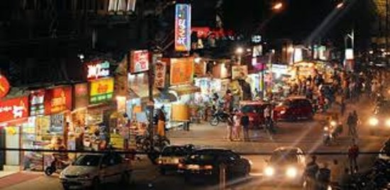

 Chappan Dukan (56 Shops) is a must-visit place for all foodies where you can find all street food, namkeens (Indian snacks), and other food/noon-food items !! This street is famous for delicious & cheap snacks and sweets of Indore !! Right from 6:00 AM everyday when the Indore's ubiquitous breakfast Pohaa is served at various shops, till late in the evenings (around 10:00 PM) !! This market is abuzz with a huge variety of items - you can have many types of snacks, chaat, sweets, foods, hotdog (banjos), momos, and hot & cold drinks such as coffees, teas, milkshakes, juices, etc., all at one place !!
Three of the famous Indian sweets makers of Indore - Agrawal Sweets, Madhuram Sweets, and Gangaur Sweets - have their big outlets here !!
The mornings and days are business-as-usual, and evenings are happening and colourful as when youngsters, singles, couples, and families keep hopping from one food joint to the other, savouring their favourite foods !! Then, for the enjoyment of kids, there are various options including pony-rides, camel-rides, small swings, balloon shooting, etc., which keep changing from time to time !! There are a whole lot of convenience shops too, here !!